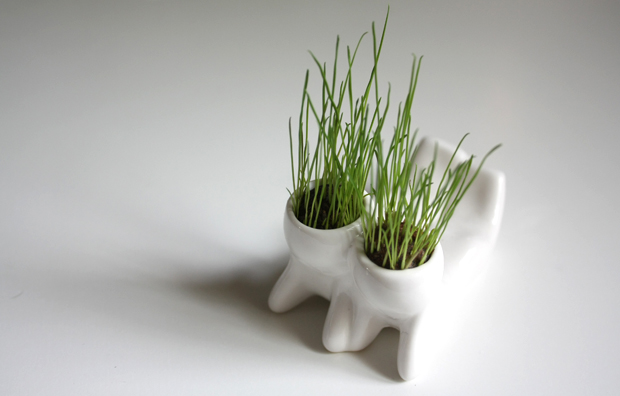
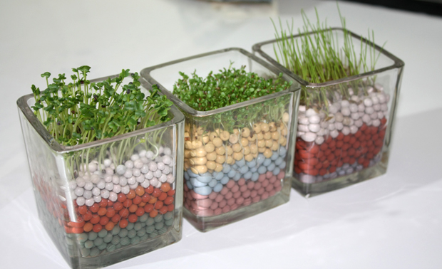
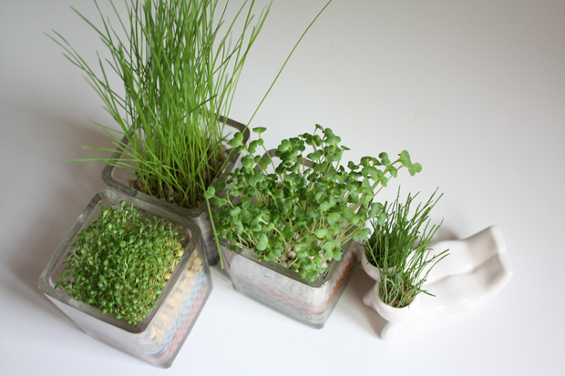

周日一口气逛了三个书店，王府井外文书店，王府井图书大厦，和西单图书大厦。 好久没有这样逛书店了，当然还是走马观花，上一次坐在书店里看一个下午的书，得追溯到一年半前在五道口的光合作用了。 除了外文书店，另外两座图书大厦都是人满为患。谁说中国人不爱读书的，你看这些书店里一楼二楼三楼总是挤满了人，一楼最挤的通常是成功学辅导书，二楼三楼是外语学习书和教辅类图书。看那些坐在二三楼地上看花花绿绿课外辅导书的孩子，想像他们长大后会转移到一楼继续扎堆看职场手册或者成功教程，活到老学到老。 前几天王三表在博客上写美术馆那儿的三联书店人少了，书也少了，不对呀，这俩偌大的图书大厦怎么还这么多人呢。相比之下，外文书店基本没人，只有零零散散几个老外，在底楼一侧看英文名字的中文翻译小卡片，呵呵傻笑。 三楼还是四楼有不少外语原版儿童书，也是一个人都没有。当然价格太贵是一个重要因素，另一个原因，大概中国家长们会觉得这些书太简单，没什么营养，全是画儿，没几个字，也跟中国孩子们的课程没什么关系。不过这些书真是好看哪，我们俩都逗留了好久，还找了半天立体书。 英文原版书对面是日文原版书，进门摆着原版的1Q84，小小的，我还从来不知道日文原版书大多都是这种小小的32开，一看就是方便挤地铁的上班族放在包包里的。现在想来，真是后悔大学二外选了法语，应该选日语的。想当初大学投票日语也就差了那么一两票落选，我当初也不知道吃错了什么药选了法语，结果现在法语也差不多忘光了，日语还仍然停留在会说几个单词的层面。现在阴差阳错入了设计的行当，才突然发现应该多学学日本的东西，要是会日语会方便很多。 两个人逛到晚上，结果一本书都没买，倒是买了一堆CD，也算没白逛。
每日种草
一到夏天，就会有种植的欲望。大概一年之中，夏天是最厌倦城市生活的，总想着跟大自然更近一点，跟绿色更近一点。前几天看香港电台的铿锵集，里边走访了一些放弃掉城市生活的香港人，在香港郊外过每日种田的村野生活，突然就很想放下现在的一切，去农村，承包下一小片田地，种自己喜欢的蔬菜水果，自给自足。 
长草小人买回第二天

长势很快

刚刚修剪完头发，还是有点乱

从左到右：心形草，晴思草，岩石草
窗户向北，小草艰难地寻找阳光

心形草长大是会开花的，只可惜这段时间天气太闷热，花还没开，草就快蔫了
全是绿的

六月拾遗
 6月看了今年第一个演出，at17在星光现场。一直很少机会去看现场演出，演出的门票在我这个阶层看起来总是奢侈的行为。当然也不是花不起，但还是要挑过选过才能决定。我希望有一日，那几位能让我不计成本的乐队音乐人，能来我所在的城市。 五颜六色的背景烟幕挺浪漫，让你更能沉浸在当下。忍不住就跟着大家瞎起哄。
6月看了今年第一个演出，at17在星光现场。一直很少机会去看现场演出，演出的门票在我这个阶层看起来总是奢侈的行为。当然也不是花不起，但还是要挑过选过才能决定。我希望有一日，那几位能让我不计成本的乐队音乐人，能来我所在的城市。 五颜六色的背景烟幕挺浪漫，让你更能沉浸在当下。忍不住就跟着大家瞎起哄。  弹吉他的样子还是很投入的。忍不住再放一张。
弹吉他的样子还是很投入的。忍不住再放一张。  回家的路上，在路边的庆丰包子铺，看到了不久之后就告别世界杯的亨利。包子铺的老板挺会做生意的，晚晚投影直播世界杯，每天都客满。
回家的路上，在路边的庆丰包子铺，看到了不久之后就告别世界杯的亨利。包子铺的老板挺会做生意的，晚晚投影直播世界杯，每天都客满。
Light My Fire
Lazy Mutha Fucker（大懒堂），由于歌词内容引起社会过大争议而迫于各方压力，在2003年被迫解散（这是网上说的，也许也没有太多被迫的成分）。时隔6年，在出道10年后的2009年，LMF成员再次重聚一“堂”，在新加坡和香港举办名为“The Wild Lazy Tour”的巡回演唱会，以纪念他们的出道单曲《屋村仔》发布10周年。同时也发布了09年的新单曲《揸紧中指》。 之前已经听过，但今天又在网上看到，忍不住转到自己这来，里面还有歌词，歌词里照旧有脏话。关于脏话他们以前的歌《傲气长存》里就说过——“是不是讲几句粗口就会教坏你的仔，又不见我闹一闹就可以改善社会问题。” 闾丘露薇之前在Twitter上写到：“我曾经觉得，有些政客很吵，不做实事，但是问题在于，现在的香港，如果没有了这些噪音，会变成怎样，大家心知肚明。所以，不管这些发出噪音的人出于怎样的目的，必须看到的是，正是因为他们，我们这些不出声的人统统沾了光。” （今天是6月30日。1993年的6月30日，音乐人黄家驹与世长辞。向这些启蒙影响过我的人致敬。）
红苋菜
四川话里，“苋”这个字念han，一声，同“酣”。我觉得这个发音很形象，印象中每回吃苋菜总是吃得酣畅淋漓。 小时候，苋菜可能是我夏天最爱的一道菜。每回奶奶炒苋菜，那一盘红色的汤汁到最后总是一滴不剩，全被我拿来泡米饭。看着紫红色的汤汁一点点浸过白白的米粒，就很有食欲。有时候，红汤咸了，就再多添点米饭。吃苋菜的时候，饭都要吃的多点，不知不觉就吃得很饱。 北方的朋友问，你们四川夏天都吃什么菜。其实在四川，不像在北方，大多数菜春夏秋冬都能吃到。如果要说时令菜，那就像春天一定会吃苦笋汤，夏天，红苋菜也一样是家里餐桌上的常见菜。
看英格兰，不如看英超
西蒙.库珀说：“英格兰的世界杯征途分八个阶段，第一是被捧热，第二是遭遇到一支以往战争中的敌国的球队，第三阶段开始抱怨运气不好，第四是被裁判欺负了，第五是被淘汰，第六是恢复平静，第七是找到替罪羊，第八是进入下一届世界杯了。”实在是太精确了。从我看世界杯以来，英格兰就很少让我酣畅淋漓过。 很多国人喜欢支持国外的球队，都是中国的国家队扶不起，感情只能寄托到别人的国家队上。一些外籍朋友都不能理解，于是南非还有人问中国记者：“你们来这干什么？”。我自己看球也十几年，那些队踢得好或不好，心里都有数。但既然有第二次选择的机会，我咋又偏偏缘定英格兰…追溯起来：首先虽然我对中国有诸多意见，但自己终究是个中国人。很难像某足球评论员那样当着全国观众大喊某国万岁，搞得鸡皮疙瘩掉一地，自己都肉麻。其实国家队的比赛我是不太计较的。只所以支持英格兰，无非是我那么多年都看英超，支持曼联。所以对英格兰的人比较脸熟，相当于支持身边朋友的球队一样。除此以外，一路影响我的英伦乐队Radiohead，Blur等等，也抢了我很多的感情分。其实除了英格兰，我看世界杯大多都无所谓，可能习惯上会支持实力偏弱，或者更有冲劲的一方。除此以外没有什么取向。 今晚英格兰又在强大的德国“意志”下崩溃了，很多人还为裁判误判愤慨。今天的球输得非常窝囊，窝囊的不是比分，是不给劲。光看见一帮头脑空白，身体紧张，软不啦叽的人在场上疲倦得奔跑，输成这个样子了竟然也没有几张黄牌？也太英国绅士了。今天踢得没有冲劲，又无精神意志，球员输球后也没表现得多痛心。也让我感觉国家荣誉对他们也许很淡薄，也许还不如俱乐部荣誉来得强烈。 此外其实我心里一直以来就有一个疑问：像鲁尼，兰帕德，杰拉德，这些各个俱乐部的支柱人物，平日联赛里誓不两立，比赛拼得你死我活，不留情面。现在一起在国家队里踢球，心里真能没有一点隔阂吗？真的能无私的合作并形成默契？多年来都是死敌，一时间拉到一起。总感觉不如别的小国来的团结。这几届世界杯看英格兰，最有集体主义拼搏精神的就是哈格里夫斯，还有贝克汉姆。可惜现在都不在场上了。 看着今天的鲁小胖，真不知道说什么，是太疲劳还是怎么了？和在俱乐部实在差得太远，其他人又何尝不是。大家都早日回俱乐部报道吧，联赛8月份又开赛了。世界杯结束，大部分的人们又都会散去。剩下的我们这些拥趸还会继续看联赛。对于英格兰足球来说，真是看英格兰，不如看英超。作为一个多年的英格兰球迷，我很想把一开头西蒙.库珀的那段话作为英格兰最好的注释，牢记心中，会非常释怀。 （PS：本届世界杯现场的英格兰球迷们——唯一会“嘘”自己国家队的是你们，但唱歌加油助威最有气势的也是你们，真服了。）
晓禾依树电台第八期
此电台节目已转移：http://www.coletree.com/podcast/2010/06/37/ At17和At70，两种截然不同的人生阶段和截然不同的声音。 歌曲列表： 1.那年17岁——At17 2.当大树掉下最后一颗苹果——At17 3.安乐——At17 4.The Best is Yet to Come——At17 5.Hallelujah——Leonard Cohen 6.Famous Blue Raincoat——Leonard Cohen http://www.coletree.com/radio/coletree_radio_008.mp3
17和70
看了两场演出，一个是香港乐队At17的不插电现场，一个是70岁老头Leonard Cohen的北京现场，17岁和70岁，两种截然不同的人生阶段和截然不同的声音。青春有太多的欲求，于是就有太多的迷茫，也许只有等到我们学会放空一切，才会暮然回首，发现所谓的最好，但这个过程一定很漫长，也许就是一辈子。听吟游诗人科恩唱歌，有一种想变老的冲动，他如大提琴般让人沉醉的沙哑声音里蕴含着层层岁月的故事，又以最简单无修饰的嗓音呈现出来，好希望自己7、8十岁时能有这么一把一出声就有故事的声音。 [embed]http://www.coletree.com/radio/coletree\_radio\_008.mp3\[/embed\]
小烤五花肉
这几天突然很想大口吃肉，今天自己在家试着做了个韩式烤肉。 买了几两五花肉，切成片平铺在平底锅上煎，快熟的时候下酱料，用的是李锦记烤肉酱和牛肉酱混在一起，还加了点香菇丝一起炒了炒，出锅。 生菜叶子洗干净放到一边，吃的时候拿生菜卷着烤肉吃就行了，很简单，也很美味。 本来上火的烤肉被清脆的生菜卷着，也挺清爽，会有种健康的错觉。 生菜卷确实需要大口大口吃，稍不注意酱汁就会流出来，所以如果你也和我一样喜欢坐在电脑面前吃，一定要加倍小心了
夏雨天
好难得北京能下一整天的雨，屋里屋外顿时清凉不少。 上网看世界杯，调小了声音，一边开了琴，练着久石让的Summer，奇怪的组合，不过感觉很夏天，而且比听Vuvuzela的嗡嗡声强多了。 端午节那几天本来打算做电台，结果先是上火再又肚子疼，又有了理由拖着。博客也很久没写，天天看着排名一路跌停，还是没有想写的冲动。 第三天去新城回来的晚上开始雷雨，过天桥去坐车的时候看见闪电那么近地在楼顶劈开，就想起乐山的夏天。 有一年，还上中学吧，连日暴雨，船都开到家门口的小路上了，我和我爸兴奋地撑着伞去滨江路散步，闪电就在江面上来回劈着，雷从头顶轰鸣着滚过。后来想起都有些后怕，脚下是快到膝盖的水，要是被雷电击中，很容易导电吧。 每逢北京桑拿天，我和小树总会说，这要是在南方，傍晚就该下大雨了。两个人一边怀念南方凉爽的雨天，一路争执着广东的雨大还是四川的雨大，然后他说他们那儿会有台风天，我就只好罢休。 今年南方的暴雨来得太早，也太猛。一年刚刚过半，好像已经遍历了各种天灾，真不是好兆头。 南方的雨水要是能分点给北京就好了。 北京的雨天还是太短，才一天，又晴了。